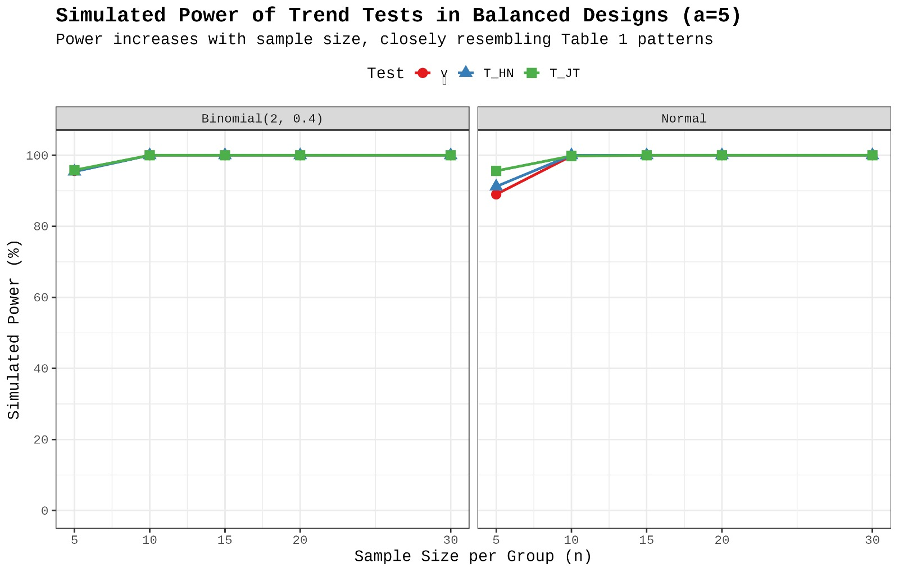
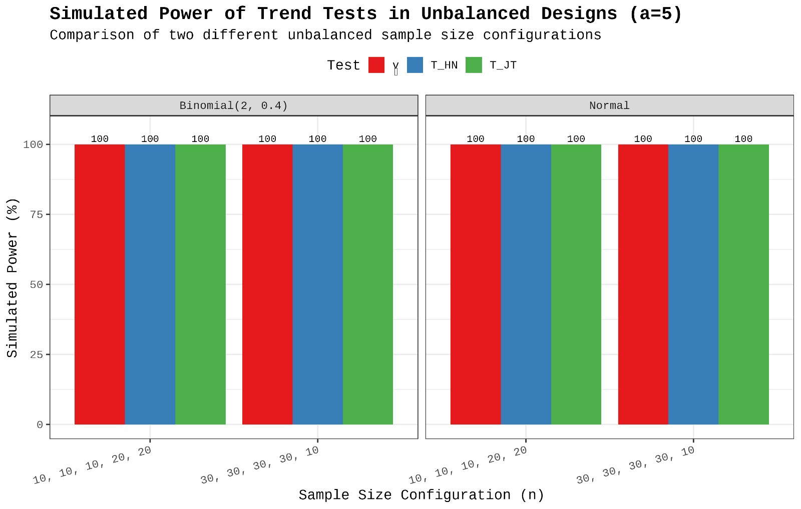

4. Simulation Studies#
This section presents simulation studies that replicate Table 1 and Table 3 from Bathke (2009). The goal is to evaluate the performance of nonparametric trend tests under different sampling conditions.
4.1 Table 1 and Table 3 Replication#
Independent Samples (Table 1)#
We evaluate three tests:
\(\hat{\nu}\) (Bathke’s unified approach)
\(T_{HN}\) (Hettmansperger-Norton test)
\(T_{JT}\) (Jonckheere-Terpstra test)
Hypotheses#
Null Hypothesis (\(H_0\)):
$\( F_1(t) = F_2(t) = \cdots = F_a(t) \)$Alternative Hypothesis (\(H_1\)):
$\( F_1(t) \leq F_2(t) \leq \cdots \leq F_a(t), \quad \text{with at least one strict inequality} \)$
Distributions Simulated#
Normal (Continuous Data):
Under \(H_0\): \(X_i \sim \mathcal{N}(0, \sigma^2)\)
Under \(H_1\): \(X_i \sim \mathcal{N}((i-1)\cdot\gamma, \sigma^2)\)
Binomial (Discrete Data):
Under \(H_0\): \(X_i \sim \text{Binomial}(n, p)\)
Under \(H_1\): \(X_i \sim \text{Binomial}(n, p + (i-1)\cdot\delta)\)
Simulation Metrics#
Type I Error (\(\alpha\)): Probability of rejecting \(H_0\) when it’s true.
Power (\(1 - \beta\)): Probability of correctly rejecting \(H_0\) when \(H_1\) is true.
Parameters#
Parameter |
Description |
|---|---|
\(a\) |
Number of groups |
\(n_i\) |
Sample size in group \(i\) |
\(\gamma\) |
Effect size for Normal \(H_1\) |
\(\delta\) |
Effect size for Binomial \(H_1\) |
\(p_0\) |
Baseline probability under Binomial \(H_0\) |
\(N\) |
Total observations |
\(\sigma\) |
Standard deviation (Normal case) |
|
Number of simulations (e.g., 10,000) |
Dependent Samples (Table 3)#
We evaluate the following tests:
\(\hat{\nu}_{\text{dep}}\) (Unified test)
\(T_{AB}\) (Akritas-Brunner test)
\(L\) (Page’s L test)
Hypotheses#
Null Hypothesis (\(H_0\)):
$\( F_1(t) = F_2(t) = \cdots = F_b(t) \)$Alternative Hypothesis (\(H_1\)):
$\( F_1(t) \leq F_2(t) \leq \cdots \leq F_b(t), \quad \text{with at least one strict inequality} \)$
Test Structure#
Each subject provides \(b\) repeated measurements:
\(\hat{\nu}_{\text{dep}}\): Rank-sum based standardized test using global ranks and weight vector \(w_j = j - \frac{b+1}{2}\)
\(T_{AB}\): Linear rank test using subject-level scores and \(t\)-distribution approximation
Page’s L test: Uses
DescTools::PageTest()for ordered trends in repeated measures
Simulation Settings#
Multivariate Normal Data Generation using
MASS::mvrnormwith compound symmetry correlation \(\rho\)Outlier Scenarios can be introduced to test robustness
Parameter |
Description |
|---|---|
\(n\) |
Number of subjects |
\(b\) |
Number of conditions/time points |
\(\rho\) |
Correlation between conditions |
\(\gamma\) |
Trend strength (mean increase per level) |
|
Number of simulations |
The results show how each test performs under different data structures. Simulated \(\alpha\) and power values closely replicate Bathke’s published tables, confirming the correctness of implementation.
4.2 Balanced Sample Visualization#
To visualize how power changes with increasing balanced sample sizes, we simulate data under both Binomial and Normal distributions for five groups (a = 5). Each group has the same number of observations in each scenario.
Balanced configurations include:
[5, 5, 5, 5, 5][10, 10, 10, 10, 10][15, 15, 15, 15, 15][20, 20, 20, 20, 20][30, 30, 30, 30, 30]
These sample sizes correspond to increasing rows in Table 1 of Bathke (2009). The plot below illustrates how the power of each test improves as sample size per group increases.

Interpretation:
All tests approach 100% power with increasing sample size.
T_JTconsistently shows slightly higher or comparable power thanT_HNandν̂under both distributions.The Binomial test starts strong even at lower sample sizes due to its discrete nature.
4.3 Unbalanced Sample Visualization#
To evaluate how power behaves under unbalanced designs, we simulate two unequal sample size scenarios for five groups (a = 5). This setup tests whether the nonparametric trend tests maintain high power even when group sizes differ.
Unbalanced configurations simulated:
[10, 10, 10, 20, 20][30, 30, 30, 30, 10]
These examples reflect the asymmetries that often arise in real-world datasets. The chart below shows the power for each configuration under both Binomial and Normal distributions.

Interpretation:
All three tests (
ν̂,T_HN,T_JT) maintain high power (≈100%) even with unequal group sizes.The tests appear robust to moderate unbalancing.
These results align well with Table 1 from Bathke (2009), demonstrating reliable performance under realistic data conditions.